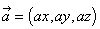
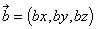
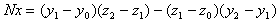

A vector that expresses the vertical direction of a surface is called a normal vector:
To calculate the normal vector of a surface, you need to find what is called the cross-product of the two vectors that specify that surface. You can use the following step-by-step technique to calculate the cross-product of two vectors
 and
and  where:
where:


In summary, to obtain the cross-product of vectors  and
and  , use this formula:
, use this formula:
Here is a second example that shows how to find the normal vector N of the plane defined by the three points A, B and P shown in this illustration:
Note: When working with the two vectors  and
and  , you must be very careful to factor in each vector's direction.
, you must be very careful to factor in each vector's direction.
Calculate the normal vector N by using this formula:
To get the cross-product of the vectors, apply these formulas:
Because  and
and  are vectors, specify each coordinate component like this:
are vectors, specify each coordinate component like this:
Therefore, the final detailed formula for the normal vector N (Nx,Ny,Nz) is:

You need the cross-product for many geometric calculations, not just to calculate the normal vector.
Nintendo® Confidential
Copyright © 1999
Nintendo of America Inc. All Rights Reserved
Nintendo and N64 are registered trademarks of Nintendo
Last Updated March, 1999